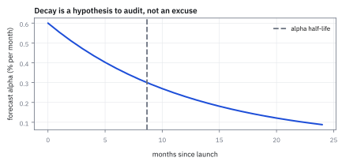
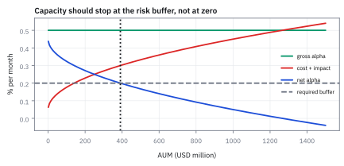
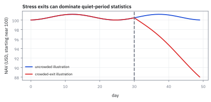
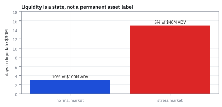

15.7 Alpha Decay and Crowding
วัดว่าสัญญาณเหลือเท่าไรหลังหักต้นทุนและคนแห่ตาม
สัญญาณ alpha เริ่ม 0.50% ต่อเดือน จางด้วยอัตรา 0.08 ต่อเดือน กองทุน 100 ล้าน USD เสียต้นทุนเดือนละ 0.18% หลัง 12 เดือนเหลือ alpha สุทธิเท่าไร ผ่านเกณฑ์ 0.20% ไหม?
เฉลย: สัญญาณเหลือ 0.1914% ต้นทุน 0.1765% สุทธิแค่ 0.0150% หรือ 14,956 USD ต่อเดือน ต่ำกว่าเกณฑ์มาก ต้องหยุดรับเงิน ส่วนตอนเปิด ขนาดที่ทำกำไรรวมสูงสุดคือ 4/9 ของจุดคุ้มทุน
ศัพท์ที่ใช้ในหัวข้อนี้
- alpha decay
- การลดลงของ expected signal return เมื่อเวลาผ่านไปหรือหลัง implementation environment เปลี่ยน ใช้ตั้ง review cadence และ conservative capacity assumptions
- crowding
- การกระจุกของ investors ใน similar positions, signals หรือ funding sources ใช้ประเมิน risk ที่ correlations และ impact กระโดดใน stressed exit
- capacity
- capital scale ที่ strategy ยังสามารถ trade โดยไม่ให้ costs and impact กิน expected return ที่ตั้งไว้ ใช้จำกัดเงินหรือ order size
- market impact
- การเปลี่ยนแปลงราคาที่สัมพันธ์กับ own trading และ concurrent flow ใช้หัก implementation shortfall จาก paper alpha
- liquidity
- ความสามารถซื้อขายขนาดหนึ่งใกล้ราคาที่สังเกตได้ในเวลาหนึ่ง ใช้กำหนด participation limit และ stressed-exit plan
- drawdown
- การลดลงจาก running peak ของ portfolio value ใช้กำหนด risk limit และตรวจว่า stop rule อยู่ได้ใน stress หรือไม่
- assets under management (AUM)
- มูลค่าเงินลงทุนที่ strategy ต้องบริหาร ใช้เป็นตัวแปร scale สำหรับ capacity, trading cost และ liquidation time
- Net Asset Value (NAV)
- มูลค่าสินทรัพย์สุทธิของ portfolio หลังหนี้สิน ใช้เป็นฐานวัด return และ drawdown ที่ผู้ลงทุนรับจริง
- leverage
- อัตราส่วน gross exposure ต่อเงินทุนสุทธิ ใช้ขยายทั้ง expected return, loss, financing need และ forced-sale risk
- average daily volume (ADV)
- มูลค่าหรือจำนวนหุ้นที่ซื้อขายเฉลี่ยต่อวันในหน้าต่างที่ระบุ ใช้กำหนด participation rate และประมาณวันออกจาก position
- dollar-weighted return
- อัตราผลตอบแทนที่ถ่วงน้ำหนักด้วยเม็ดเงินลงทุนจริงในแต่ละช่วงเวลา ใช้ประเมินความมั่งคั่งสุทธิที่ผู้ลงทุนได้รับจริงเทียบกับ time-weighted return
- time-weighted return
- อัตราผลตอบแทนเฉลี่ยที่ไม่นำขนาดเงินลงทุนมาคิด ใช้ประเมินความสามารถของผู้จัดการกองทุนโดยไม่ให้เม็ดเงินไหลเข้าออกมารบกวน
สัญลักษณ์ที่ใช้ในหัวข้อนี้
| สัญลักษณ์ | ความหมาย | หน่วย |
|---|---|---|
| $\alpha_t$ | expected value หรือค่าประมาณ signal alpha เวลา $t$ | decimal return ต่อเดือน |
| $\alpha_0$ | ค่าประมาณ alpha เริ่มต้น | decimal return ต่อเดือน |
| $k$ | อัตราการ decay | ต่อเดือน |
| $t$ | เวลาหลัง launch หรือ publication | เดือน |
| $A$ | เงินใน strategy ที่บริหารอยู่ | USD |
| $C(A)$ | ค่าประมาณ cost และ impact ที่ scale $A$ | decimal return ต่อเดือน |
| $\alpha_{\mathrm{net}}$ | expected alpha หลังต้นทุน | decimal return ต่อเดือน |
| $\mathrm{NAV}_t$ | มูลค่าสินทรัพย์สุทธิของ portfolio | USD |
| $\mathrm{DD}_t$ | ค่า drawdown จากยอดสะสม | fraction of NAV |
| $Q$ | มูลค่า position ที่ต้องขาย | USD |
| $v$ | average daily volume ที่ประเมิน | USD ต่อ trading day |
| $p$ | สัดส่วน participation สูงสุด | unitless |
| $\Pi(A)$ | กำไรสุทธิรวมในรูปตัวเงินจาก alpha | USD ต่อเดือน |
| $A^*$ | ขนาดเงินลงทุนที่สร้างผลกำไรรวมสูงสุด | USD |
| $A_{\mathrm{zero}}$ | ขนาดเงินลงทุนที่ทำให้ alpha สุทธิเท่ากับศูนย์ | USD |
| $\bar{r}_{\mathrm{dollar}}$ | ผลตอบแทนเฉลี่ยถ่วงน้ำหนักด้วยเม็ดเงิน | decimal return ต่อปี |
| $\bar{r}_{\mathrm{time}}$ | ผลตอบแทนเฉลี่ยตามเวลา | decimal return ต่อปี |
ที่มาที่ไป: ทำไมกลยุทธ์ที่เคยได้ผล ถึงเลิกได้ผล
คำถามที่ผู้ลงทุนถามบ่อยที่สุดคือ ถ้ากลยุทธ์นี้ดีจริง ทำไมยังมีคนบอกต่อ
คำตอบอยู่ที่กลไกสองอย่างที่ทำงานพร้อมกัน อย่างแรกคือเมื่อคนรู้มากขึ้น การแข่งกันทำให้ราคาปรับตัว จนโอกาสนั้นเล็กลงเรื่อย ๆ
อย่างที่สองคือแม้ไม่มีใครรู้เพิ่ม เงินที่ไหลเข้ามาเองก็ทำให้ต้นทุนการซื้อขายสูงขึ้น จนกินโอกาสที่เหลือหมด
สองกลไกนี้ซ้อนกัน ทำให้ผลตอบแทนตกเร็วกว่าที่แต่ละอันจะทำได้เดี่ยว ๆ และเป็นเหตุผลที่กองทุนที่ดีที่สุดหลายแห่งเลือกปิดรับเงินใหม่ ทั้งที่ยังมีคนอยากใส่เงินเพิ่ม
กำเนิดของ Alpha และการค้นพบการจางตัว: จาก Jensen สู่ Quant Meltdown 2007
คำว่า alpha เริ่มต้นขึ้นในโลกการเงินวิชาการเมื่อ Michael Jensen ตีพิมพ์งานวิจัยประเมินผลการดำเนินงานของกองทุนรวมในปี 1968 โดยนิยาม $\alpha$ ให้เป็นค่าคงที่ในแบบจำลอง Capital Asset Pricing Model (CAPM) regression เพื่อวัดผลตอบแทนส่วนเกินที่ผู้จัดการกองทุนสร้างได้จริงเหนือความเสี่ยงตลาด ก่อนหน้านั้น นักลงทุนเปรียบเทียบเพียงตัวเลขผลตอบแทนรวมดิบๆ โดยไม่คำนึงถึงระดับ leverage หรือความเสี่ยงที่แบกรับ
เมื่ออุตสาหกรรม quantitative hedge fund เติบโตขึ้นในทศวรรษ 1990 นักวิจัยเริ่มพบความจริงอันเจ็บปวดว่า สัญญาณ alpha ไม่ได้คงอยู่ตลอดไป งานวิจัยของ McLean และ Pontiff ในปี 2016 ที่ศึกษาความผิดปกติกว่า 90 ชนิดพบว่า ทันทีที่มีการตีพิมพ์งานวิจัยเผยแพร่ออกไป ผลตอบแทนส่วนเกินจะลดลงเฉลี่ยถึง 58% เนื่องจากมีเงินทุนใหม่ไหลเข้ามาแย่งชิงโอกาสจนราคาตลาดปรับตัวเข้าสู่สมดุลอย่างรวดเร็ว
จุดสูงสุดของบทเรียนเรื่อง crowding เกิดขึ้นในเหตุการณ์ Quant Meltdown เดือนสิงหาคม 2007 เมื่อกองทุน quant equity ชั้นนำหลายแห่งใช้แบบจำลองคล้ายคลึงกันและถือครองหุ้นทับซ้อนกัน เมื่อกองทุนขนาดใหญ่แห่งหนึ่งถูกบังคับขายสินทรัพย์เพื่อเพิ่มสภาพคล่อง ราคาหุ้นจึงถูกกดดันสวนทางกับแบบจำลอง ทำให้ทุกกองทุนขาดทุนพร้อมกันในระดับ 25 standard deviations ทั้งที่ไม่มีข่าวสารเศรษฐกิจมหภาคใดๆ กลายเป็นจุดกำเนิดของการบริหารความเสี่ยงด้าน crowding
Worked Example — โจทย์และสิ่งที่ให้มา
โจทย์ให้อะไรมาบ้าง: ติดตาม gross forecast, realized pre-cost return, costs, exposure changes และ AUM แยกกัน net result ที่ลดลงอาจมาจาก signal ผิด, factor regime, trading friction หรือ crowded liquidation; การโยนทุกอย่างเข้าคำอธิบายเดียวหลังเห็นผลแล้วคือ model error อีกชนิด
ขั้นที่ 1 — transparent decay hypothesis
รูปจำลอง exponential ไม่ได้เกิดขึ้นจากการเดา แต่เป็นผลลัพธ์โดยตรงจากการตั้งสมมติฐานว่า ยิ่งมี alpha เหลืออยู่มาก ผู้เล่นในตลาดก็ยิ่งเข้ามาแย่งทำกำไรเร็วขึ้นเท่านั้น
สูตร half-life นี้แสดงให้เห็นว่า อายุขัยของสัญญาณมีจำกัด หากทีมพัฒนากลยุทธ์ไม่สามารถสร้างนวัตกรรมใหม่มาทดแทน สัญญาณเดิมจะหมดคุณค่าไปตามกาลเวลา
สมมติว่าอัตราการสูญสลายของสัญญาณเป็นสัดส่วนโดยตรงกับขนาดของสัญญาณที่ยังเหลืออยู่ การแก้ differential equation ด้วยการหา integral ทั้งสองข้าง จะนำไปสู่รูป exponential decay อย่างเป็นธรรมชาติ
เมื่อกำหนดให้สัญญาณเหลือครึ่งหนึ่งของค่าเริ่มต้น เลขยกกำลังจะถูกปลดลงมาด้วย natural logarithm ทำให้เครื่องหมายลบทั้งสองฝั่งหักล้างกันจนเหลือสูตรคำนวณ half-life ที่ขึ้นกับอัตราการจาง $k$ เพียงตัวเดียว
เมื่อแทนค่า $k$ เท่ากับ 0.08 ต่อเดือน จะได้ค่าครึ่งชีวิต 8.66 เดือน ซึ่งหมายความว่า ทุกแปดเดือนครึ่ง สัญญาณจะหดตัวลงไปครึ่งหนึ่งของระดับก่อนหน้าเสมอ
ขั้นที่ 2 — นิยามของเงื่อนไขว่ากลยุทธ์ยังคุ้มที่จะรันต่อ
สัญญาณที่มีกำไรขั้นต้นสูงอาจกลายเป็นกลยุทธ์ที่ขาดทุนสุทธิได้ทันที หากขนาดเงินลงทุนใหญ่เกินไปจน market impact สูงเกินรับไหว
การกำหนด buffer ความปลอดภัย $b$ ล่วงหน้า ช่วยให้คณะกรรมการลงทุนตัดสินใจหยุดกลยุทธ์ได้อย่างเด็ดขาด ก่อนที่พอร์ตจะเริ่มกินทุนจริง
ผลตอบแทนสุทธิเป็นผลต่างระหว่างสัญญาณขั้นต้นที่กำลังจางลงตามเวลา กับต้นทุนการซื้อขายที่เพิ่มสูงขึ้นตามขนาดเงินลงทุน
เกณฑ์การตัดสินใจกำหนดว่า ผลตอบแทนสุทธิต้องสูงกว่า buffer $b$ เสมอ ไม่ใช่เพียงแค่มากกว่าศูนย์ เพื่อชดเชยความไม่แน่นอนของแบบจำลองและค่าใช้จ่ายในการดำเนินงาน
ขั้นที่ 3 — ต้นทุนตัวอย่างแบบ square-root และ capacity
capacity คือขนาดเงินที่ใหญ่ที่สุดที่ยังเหลือ alpha สุทธิถึงเกณฑ์ที่ตั้งไว้ แก้สมการโดยไล่ย้อนจากเกณฑ์กลับไปหาขนาดเงิน
ต้นทุนมีสองส่วน: 0.0005 ที่จ่ายเสมอไม่ว่าเงินเท่าไร และส่วนที่โตตามรากของขนาดเงิน
เพราะเป็นราก การจะทำให้ต้นทุนเพิ่มเป็นเท่าตัว ต้องเพิ่มเงินสี่เท่า capacity จึงใหญ่กว่าที่คนมักเดา แต่ก็ไม่ได้ไม่มีขีดจำกัด
ขั้นที่ 4 — แทนค่าที่ AUM 100 ล้าน: alpha เหลือเท่าไรหลังต้นทุนและ 12 เดือน
เอาสามขั้นแรกมาต่อกันกับตัวเลขของกองทุนจริง คือ 100 ล้าน USD หลังเปิดมา 12 เดือน
หนึ่งปีหลังเปิด สัญญาณเหลือ 38% ของตอนแรก เพราะ $e^{-0.96}=0.383$ คือ 0.19% ต่อเดือน ส่วนต้นทุนที่เงิน 100 ล้าน: รากของ 10 คือ 3.16 คูณ 0.0004 ได้ 0.13% บวกส่วนคงที่ 0.05% เป็น 0.18% ต่อเดือน
เหลือสุทธิ 0.015% ต่อเดือน คือ 14,956 USD ต่ำกว่า buffer 0.20% ที่ committee ตั้งไว้มาก ทั้งที่ capacity ตามขั้นก่อน (390 ล้าน) ยังไม่ถึง เพราะขั้นก่อนใช้ alpha ตอนเปิด 0.5% ส่วนตอนนี้สัญญาณจางเหลือ 0.19% capacity จึงไม่ใช่ตัวเลขคงที่ มันหดตามเวลาพร้อมกับ alpha
ที่ 0.19% ต่อเดือน ทำ capacity ใหม่ ต้นทุนที่ยอมได้คือ 0.0019 − 0.002 ซึ่งติดลบ แม้เงินศูนย์ก็ไม่ผ่าน buffer แล้ว ต้องลด buffer หรือหยุดกลยุทธ์
ขั้นที่ 5 — พิสูจน์ขนาดกองทุนที่ให้กำไรสูงสุด (Optimal AUM) เทียบกับ Capacity สูงสุด
ความผิดพลาดที่พบบ่อยที่สุดของผู้จัดการกองทุนคือ การพยายามระดมทุนให้เต็มขีดจำกัด capacity การขยายเงินลงทุนเกินจุด $A^*$ จะทำให้ market impact กัดกินผลกำไรของเงินก้อนเดิม จนกำไรรวมลดลง
ผลลัพธ์สี่ในเก้าเป็นกฎทองของการบริหาร quantitative fund ที่เตือนว่า ขนาดกองทุนที่เหมาะสมทางเศรษฐศาสตร์จะน้อยกว่าครึ่งหนึ่งของ capacity เสมอ
กำไรสุทธิรวมในรูปตัวเงินเกิดจากขนาดเงินลงทุนคูณกับผลตอบแทนสุทธิ เมื่อกระจายเทอมออกมา พจน์ต้นทุนจะยกกำลังสามส่วนสองตามกฎ square-root impact
การหาจุดสูงสุดทำได้โดยกำหนดให้อัตราการเปลี่ยนแปลงของกำไรรวมเป็นศูนย์ ซึ่งดึงตัวคูณสามส่วนสองลงมา เมื่อย้ายข้างสมการ จะพบว่าขนาดเงินที่ให้กำไรสูงสุดคิดเป็นสี่ในเก้า หรือราว 44.4% ของ capacity ที่คืนทุนพอดีเสมอ
เมื่อแทนค่าจริง ขนาดเงินที่เหมาะสมที่สุดคือ 562.5 ล้านดอลลาร์ ซึ่งสร้างกำไรสุทธิ 843,750 ดอลลาร์ต่อเดือน หากขยายกองทุนจนแตะระดับ break-even กำไรสุทธิรวมจะกลับกลายเป็นศูนย์
ขั้นที่ 6 — พิสูจน์ความแตกต่างระหว่าง Time-Weighted และ Dollar-Weighted Returns
ตัวเลขนี้มาจากเอกสารการสอนเรื่อง statistical biases ในการประเมินผลการดำเนินงาน กองทุนเฮดจ์ฟันด์มักรายงานผลตอบแทนแบบ time-weighted เพื่อดึงดูดเงินลงทุน
ทว่าเมื่อขนาดกองทุนขยายใหญ่ขึ้นจนติดข้อจำกัดด้านสภาพคล่อง ผลตอบแทนต่อดอลลาร์มักลดลงอย่างฮวบฮาบ การดูเฉพาะตัวเลขเฉลี่ยรายปีจึงสร้างภาพลวงตาที่บิดเบือนจากประสบการณ์จริงของผู้ลงทุน
ค่าเฉลี่ยทางคณิตศาสตร์แบบ time-weighted ให้ความสำคัญกับผลตอบแทนแต่ละปีเท่ากัน ทำให้ตัวเลขที่รายงานในเอกสารการตลาดดูเป็นบวก 5%
แต่ในโลกความเป็นจริง ปีแรกกองทุนมีเงินเพียงหนึ่งล้านจึงทำกำไรได้สองแสนดอลลาร์ ขณะที่ปีที่สองกองทุนขยายตัวเป็นสิบล้านและขาดทุนสิบเปอร์เซ็นต์ คิดเป็นเงินหนึ่งล้านดอลลาร์
เมื่อคิดผลตอบแทนเฉลี่ยถ่วงน้ำหนักด้วยเม็ดเงินลงทุนจริง นักลงทุนโดยรวมกลับขาดทุนแปดแสนดอลลาร์ หรือคิดเป็นผลตอบแทนติดลบ 7.27% ต่อปี
ขั้นที่ 7 — นิยามของการวัดว่าตอนนี้ติดลบจากยอดสูงสุดเท่าไร
drawdown เป็นมาตรวัดความเสียหายจากจุดสูงสุด ไม่ใช่ผลตอบแทนจากจุดเริ่มต้น การลดลงของมูลค่าทรัพย์สินแตะระดับนี้มักกระตุ้นให้ผู้ลงทุนไถ่ถอนหน่วยลงทุน ทำให้กองทุนต้องขายสินทรัพย์ออกมาในจังหวะที่แย่ที่สุด
ตัวส่วน $M_t$ คือจุดสูงสุดสะสมของมูลค่าทรัพย์สินสุทธิที่บันทึกไว้จนถึงเวลาปัจจุบัน ซึ่งเป็นค่าที่ไม่เคยปรับลดลงตามราคาตลาด
ผลต่างระหว่าง NAV ปัจจุบันกับยอดสูงสุดเมื่อหารด้วยยอดสูงสุด จะให้สัดส่วนการขาดทุนสะสมซึ่งมีค่าไม่เกินศูนย์เสมอ
หากกองทุนเคยแตะระดับ 1.2 ล้านดอลลาร์ แล้วย่อตัวลงมาอยู่ที่ 1,032,900 ดอลลาร์ จะมี drawdown เท่ากับลบ 13.93% ซึ่งเป็นตัวเลขที่นักลงทุนใช้ตัดสินใจถอนเงิน
ขั้นที่ 8 — เวลาขาย position ในภาวะปกติและ stress
สภาพคล่องในตลาดเปรียบเสมือนประตูหนีไฟที่ดูกว้างขวางในยามปกติ แต่จะแคบลงทันทีเมื่อทุกคนพยายามวิ่งออกพร้อมกัน
หากแบบจำลองความเสี่ยงประเมินเวลาปิดสถานะไว้เพียงสามวัน แต่ของจริงต้องใช้เวลาถึงสิบห้าวัน กองทุนจะถูกบีบให้ยอมรับการขาดทุนจาก market impact ที่รุนแรง
เวลาในการปิดสถานะขึ้นกับปริมาณการซื้อขายเฉลี่ยต่อวันและอัตราส่วนการมีส่วนร่วมในตลาด เพื่อไม่ให้ส่งผลกระทบต่อราคาจนเกินไป
ในสภาวะปกติ การเทรด 10% ของปริมาณซื้อขายต่อวันทำให้กองทุนสามารถระบายหุ้น 30 ล้านดอลลาร์ออกได้หมดภายในเวลาเพียงสามวัน
แต่เมื่อเกิดวิกฤตและเกิดภาวะ crowding ปริมาณซื้อขายรวมจะลดลงเหลือ 40 ล้านดอลลาร์ และการมีส่วนร่วมถูกจำกัดเหลือ 5% ส่งผลให้เวลาในการปิดสถานะยืดยาวออกไปเป็น 15 วัน หรือเพิ่มขึ้นถึงห้าเท่า
ขั้นที่ 9 — ค่าเฉลี่ยแบบไหน: สองกองทุน ครอบครัว และคิวตรวจคนเข้าเมือง
ขั้นที่ 6 ให้กองทุนที่ time-weighted +5% แต่ผู้ลงทุนเสียเงิน ลองกองทุนที่สองที่สลับขนาดเงินกัน แล้วดูว่าความผิดพลาดแบบเดียวกันเกิดนอกวงการกองทุนอย่างไร
สองกองทุนรายงาน time-weighted เท่ากันที่ +5% แต่กองแรกทำเงินผู้ลงทุนหาย 0.8 ล้าน USD กองที่สองทำเงินให้ 1.9 ล้าน USD ต่างกันแค่ว่าปีที่ดีมีเงินอยู่เท่าไร ผู้ลงทุนมีชีวิตอยู่กับ dollar-weighted ไม่ใช่ time-weighted วงการ hedge fund รายงานตัวหลัง จึงซ่อนปีที่ขาดทุนตอนกองใหญ่ได้
อยากรู้ว่าครอบครัวมีลูกเฉลี่ยกี่คน ถ้าสุ่มถามคนแล้วนับพี่น้องรวมตัวเขา ครอบครัวที่ไม่มีลูกไม่มีวันถูกถาม และครอบครัวที่มีลูก k คนถูกถามบ่อยกว่า k เท่า
ถ้า 30% ไม่มีลูก 30% มีหนึ่ง 25% มีสอง และ 15% มีสาม ค่าจริงคือ 1.25 แต่การสุ่มคนได้ 2.12 นี่คือ inspection paradox แบบเดียวกับการถ่วงผลตอบแทนด้วยเงิน
ด่านตรวจคนเข้าเมืองสุ่มผู้โดยสารชั่วโมงละคน สิบชั่วโมงเงียบมี 50 คนรอ 10 นาที สองชั่วโมงเร่งด่วนมี 500 คนรอ 60 นาที เฉลี่ยรายชั่วโมงได้ 18.3 นาที แต่ผู้โดยสารส่วนใหญ่รอจริงเฉลี่ย 43.3 นาที ก่อนเฉลี่ยให้ถามก่อนว่าถ่วงด้วยอะไร และใครเป็นคนที่ตัวเลขนี้ควรเป็นตัวแทน
แล้วเอาไปใช้ทำอะไรได้จริงบ้าง
การยอมรับว่าสัญญาณจางลงและมีขีดจำกัดด้านขนาด เป็นสิ่งที่แยกแผนธุรกิจจริงออกจากความฝัน
ใช้ตอบคำถามที่ผู้ลงทุนถามก่อนใส่เงิน คือกลยุทธ์นี้รับเงินได้เท่าไรก่อนจะไม่คุ้ม
ใช้วางแผนว่าจะรับเงินเพิ่มหรือปิดรับ ซึ่งเป็นการตัดสินใจที่กำหนดอนาคตของกองทุน
ใช้ประเมินว่าถ้าต้องออกจากสถานะทั้งหมด จะใช้เวลากี่วัน ทั้งในวันปกติและวันที่ทุกคนอยากออกพร้อมกัน
Figure 15.7a — signal decay monitor

เส้นเป็น exponential alpha forecast ตัวอย่าง เริ่มที่ 0.50% ต่อเดือนและใช้ decay rate 0.08 ต่อเดือน การติดตามจริงต้องใส่ confidence bands และ realized net outcomes ไม่ใช่บังคับข้อมูลให้กอดเส้น
Figure 15.7b — capacity squeezes net alpha

cost curve สังเคราะห์สูงขึ้นตาม AUM และตัดเส้น gross alpha จุดตัดเป็น model-specific capacity; ของจริงต้องใช้ live liquidity, volatility, borrow และ concurrent-flow data พร้อม uncertainty buffer
Figure 15.7c — crowded exit toy scenario

สอง paths สังเคราะห์มี calm volatility เหมือนกัน แต่ crowded path เพิ่ม concurrent exit shock หนึ่งครั้ง ภาพไม่ reconstruct เหตุการณ์จริง เพียงเตือนว่า correlation และ impact เปลี่ยนตาม state
Figure 15.7d — liquidity หายทำให้เวลาขายยืด

position 30 ล้าน USD ใช้สามวันในภาวะปกติ แต่เมื่อ volume ลดและ participation limit เข้มขึ้นพร้อมกัน ต้องใช้ 15 วัน ระหว่างนั้น alpha, beta และ funding สามารถเปลี่ยนได้ทั้งหมด
monitoring ledger และ escalation rule
แยก gross forecast, pre-cost realized return, commissions, spread, impact, borrow, factor exposure, AUM และ drawdown เป็นคนละ ledger เพื่อวินิจฉัยว่า decay มาจาก signal หรือ implementation ตั้ง trigger ก่อนเห็นผล เช่น net-alpha forecast ต่ำกว่า buffer สองเดือน, stressed exit เกินสิบวัน หรือ drawdown เกิน budget แล้วนำเข้า capacity committee ห้ามอธิบายทุกอย่างย้อนหลังด้วยคำว่า regime เพราะคำนั้นเก่งเกินมนุษย์ตอนประชุมวันจันทร์
คำตอบ — alpha ที่จาง ขนาดกองทุน และค่าเฉลี่ยที่ผู้ลงทุนได้จริง
คำถาม: สัญญาณ alpha เริ่ม 0.50% ต่อเดือน จางด้วยอัตรา 0.08 ต่อเดือน กองทุน 100 ล้าน USD หลัง 12 เดือนเหลือ alpha สุทธิเท่าไร ผ่านเกณฑ์ 0.20% ไหม และควรบริหารเงินขนาดไหน?
ของที่มี: ขั้นที่ 1 ถึง 9
1. ครึ่งชีวิตของสัญญาณ ln 2 ÷ 0.08 = 8.66 เดือน หลัง 12 เดือนเหลือ 0.5% × 0.383 = 0.1914% หรือ 191,446 USD
2. ต้นทุนที่ 100 ล้าน 0.05% + 0.04% × 3.162 = 0.1765% หรือ 176,491 USD เหลือสุทธิ 0.0150% หรือ 14,956 USD ต่ำกว่าเกณฑ์ 0.20% ต้องหยุดรับเงิน
3. ตอนเปิด capacity ที่ผ่านเกณฑ์คือ 390.6 ล้าน USD จุดคุ้มทุน 1,265.6 ล้าน และขนาดที่กำไรรวมสูงสุดคือ 4/9 ของจุดคุ้มทุน 562.5 ล้าน ได้ 843,750 USD ต่อเดือน
4. ขาย position 30 ล้าน USD ใช้ 3 วันในภาวะปกติ แต่ 15 วันในภาวะเครียด
5. กองที่ +20% บน 1 ล้านแล้ว −10% บน 10 ล้าน รายงาน +5% แต่ผู้ลงทุนได้ −7.27% ต่อดอลลาร์
ตรวจเองใน 10 วินาที: 0.5% × 0.38 ≈ 0.19% ลบต้นทุน 0.18% เหลือเกือบศูนย์ และ (0.20 − 1.00) ÷ 11 ≈ −7.3%
แปลว่าอะไร: alpha ไม่ใช่ทรัพย์สินถาวร มันจางตามเวลาและหดตามขนาดเงิน ทีมต้องแยกบัญชี signal ต้นทุน และขนาดกองทุน ตั้งเกณฑ์หยุดก่อนเห็นผล และรายงานผลตอบแทนแบบที่ผู้ลงทุนได้จริง
โค้ดตรวจ decay, capacity และ liquidation
import numpy as np
alpha0=.005
k=.08
months=12
A=100_000_000
alpha12=alpha0*np.exp(-k*months)
cost=.0005+.0004*np.sqrt(A/10_000_000)
net=alpha12-cost
half=np.log(2)/k
capacity=10_000_000*((.005-.002-.0005)/.0004)**2
normal=30_000_000/(.10*100_000_000)
stress=30_000_000/(.05*40_000_000)
assert abs(half-8.664339757)<1e-9
assert abs(alpha12*A-191_446.443)<1
assert abs(cost*A-176_491.106)<1
assert abs(net*A-14_955.337)<1
assert abs(capacity-390_625_000)<1e-6
assert (normal,stress)==(3,15)
a_zero=10_000_000*((.005-.0005)/.0004)**2
assert abs(a_zero-1_265_625_000)<1e-3 and abs(4/9*a_zero-562_500_000)<1e-3
assert abs((1*.20-10*.10)/11+.0727)<1e-4 and abs((10*.20-1*.10)/11-.1727)<1e-4
pk=np.array([.30,.30,.25,.15]); k_=np.arange(4)
assert abs(pk@k_-1.25)<1e-12 and abs((pk@k_**2)/(pk@k_)-2.12)<1e-12
assert abs((10*10+2*60)/12-18.33)<0.01 and abs((500*10+1000*60)/1500-43.33)<0.01โค้ดตรวจสมการ decay, dollar attribution, capacity ที่มี buffer และวันขายสอง states; production ต้องแทนค่าด้วย forecasts และ liquidity snapshots ที่ timestamp ตรงกัน
ก่อนไปต่อ — แบบจำลอง time series
decay monitor และ stressed liquidation ต้อง forecast สิ่งที่เปลี่ยนตามเวลา ได้แก่ mean, autocorrelation และ volatility บทถัดไปจึง formalize autoregressive, moving-average และ conditional-volatility models เพื่อให้ rolling risk estimate มีโครงสร้างมากกว่าเส้นเฉลี่ยย้อนหลัง
กับดัก: crowding มีแต่ position data ก็พอ
การถือหุ้นชื่อเดียวกันเป็นเพียง proxy หนึ่ง Shared factor exposure, stop rules คล้ายกัน, leverage, financing และ dealer liquidity สามารถสร้าง crowded exits แม้รายชื่อหลักทรัพย์ต่างกัน ต้องออกแบบ stress liquidation plan ก่อน signals จะสัมพันธ์กันในช่วงที่ทุกคนอยากออกพร้อมกัน
ข้อจำกัด: วิธีนี้สมมติอะไร และของจริงเป็นอย่างไร
| เรื่อง | วิธีนี้สมมติว่า | ของจริงเป็นอย่างไร | ผลที่ตามมาเวลาใช้งาน |
|---|---|---|---|
| รูปของต้นทุน | ต้นทุนโตตามรากของขนาด | เป็นเพียงค่าประมาณจากข้อมูลในอดีต | ขีดจำกัดที่คำนวณได้อาจสูงเกินจริงมาก โดยเฉพาะในภาวะตึงตัว |
| การจางของสัญญาณ | จางลงอย่างสม่ำเสมอ | อาจหายไปทันทีเมื่อมีคนค้นพบวิธีเดียวกัน | แผนที่วางบนการจางอย่างช้า ๆ อาจไม่ทันการณ์ |
| สภาพคล่องตอนออก | ขายได้ตามสัดส่วนปกติของปริมาณซื้อขาย | ปริมาณหายไปพร้อมกันกับที่ทุกคนอยากออก | เวลาที่ใช้ออกจริงยาวกว่าที่คำนวณหลายเท่าในวันวิกฤติ |
แถวล่างเป็นความเสี่ยงที่ทำให้กองทุนเชิงปริมาณหลายแห่งเสียหายหนักในเดือนสิงหาคม 2007
สรุปที่ใช้ได้จริง
- ติดตาม gross signal, cost และ AUM เป็นคนละ ledger
- decay curve เป็น explicit assumption ที่ต้องทดสอบ
- capacity จบก่อน strategy เริ่มออกยาก ไม่ใช่หลังจากนั้น
- crowding เป็น stress-state risk และต้องมี liquidation plan